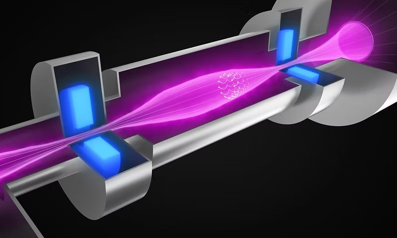
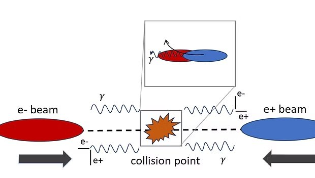
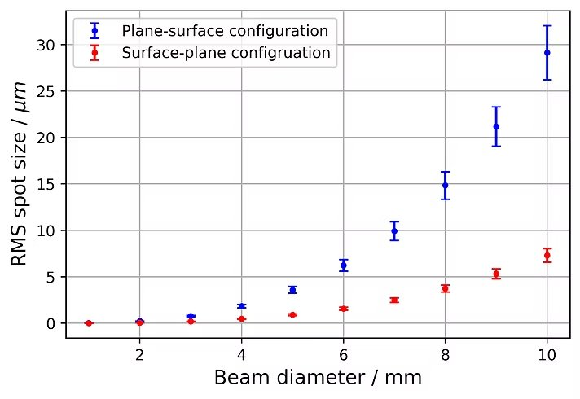
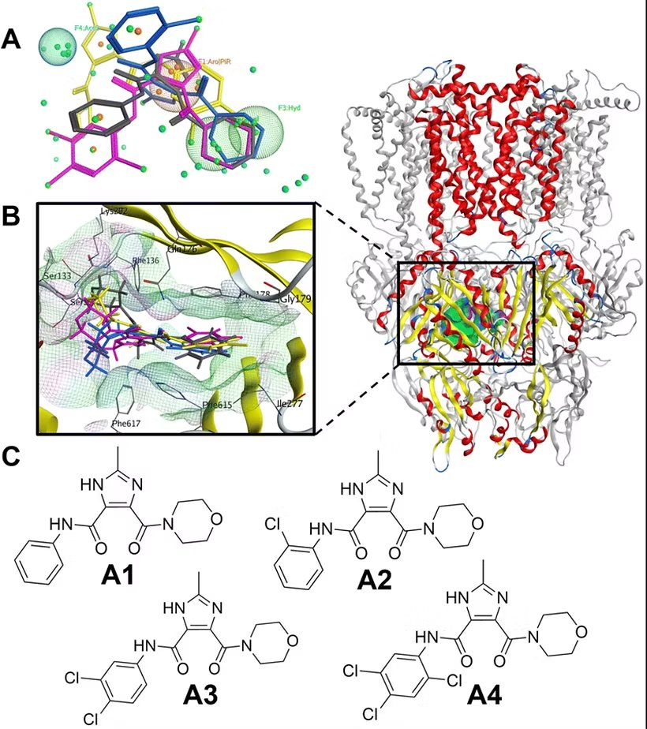

Research Projects

Realta Fusion
Neutral Beam Injection with WarpX
Start-to-end particle-in-cell simulation of neutral-beam-injection systems.

MIT PSFC
Modulated Deuteron Spectra
Investigating ion-energy modulations observed by the Magnetic Recoil Spectrometer.

SLAC
Beam–Beam Effects
Benchmarking WarpX quantum-physics models for multi-TeV linear colliders.

Imperial College London
LWFA Automation
Python control and analysis workflows for laser–plasma experiments.

Imperial College London
Adaptive Optics
An object-oriented geometrical ray tracer and aspheric-surface model.

UMP Ho Chi Minh City
Molecular Dynamics
Computational screening of potential bacterial efflux-pump inhibitors.